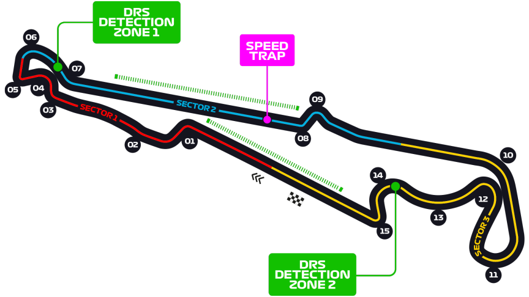

Grand Prix de France
Informations
Nom du circuit
Circuit Paul Ricard
Lieu
Le Castellet (France)
Nombre de tours
53
Longueur du circuit
5.842 km
Distance de course
309.69 km
Dernier vainqueur
Max Verstappen
Classement nombres de victoires sur ce circuit
4 victoires - Alain Prost
2 victoires - Lewis Hamilton
2 victoires - Nigel Mansell
2 victoires - Max Verstappen
Le saviez-vous ?
Le circuit offre 247 combinaisons de piste différentes. La plus grand mesure 5.858 km et la plus courte 828 m.
Le circuit a été fondé par Paul Ricard, le créateur de la boissson anisée, et propose aussi un aéroport, des hôtels et des restaurants. Il acceuilla la Formule 1 jusqu'en 1990 avant de laisser ca place l'année suivante pour le circuit de Magny Cours. La Formule 1 fit son retour en 2018 après de nombreuses améliorations en terme d'infrastructures.